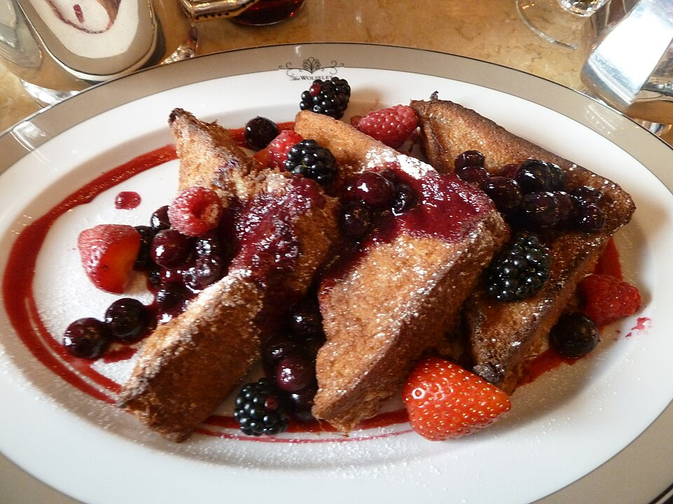

Home
French Toast

"French Toast" by Deror_avi is licensed under
CC BY-SA 3.0
Description
This is the best French toast recipe. It's different because it uses flour.
Ingredients
- ¼ cup all-purpose flour
- 1 cup milk
- 3 large eggs
- 1 tablespoon white sugar
- 1 teaspoon vanilla extract
- ½ teaspoon ground cinnamon
- 1 pinch salt
- 12 (¾ to 1-inch thick) slices of bread
Directions
- Gather all ingredients
- Place flour into a large mixing bowl; slowly whisk in milk until smooth. Whisk in eggs,
sugar, vanilla, cinnamon, and salt until well combined
- Heat a lightly oiled griddle or frying pan over medium heat. Meanwhile, soak bread slices
in milk mixture until saturated
- Working in batches, cook bread on the preheated griddle or pan until golden brown on both
sides, about 2 minutes per side
- Serve hot and enjoy!